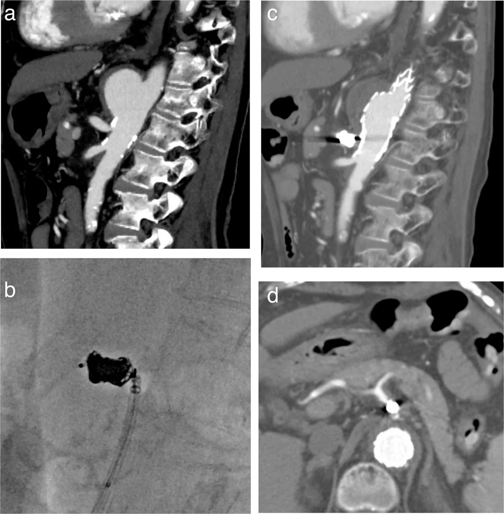
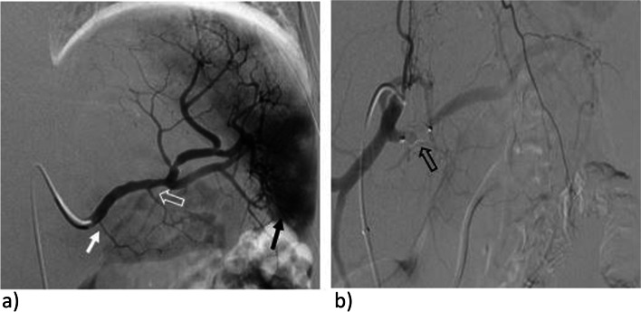
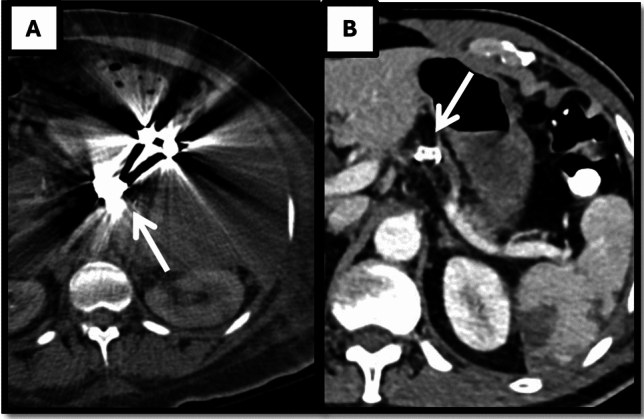
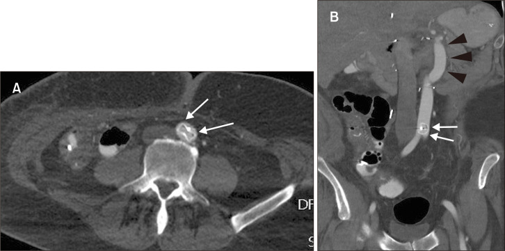

1833 — Vascular plug trong nút mạch tạng: chọn cỡ, kỹ thuật thả & ranh giới với coil / Vascular plugs in visceral artery embolization: sizing, deployment and where coils still win
Tags: pattern:bit-mach pattern:qua-co pattern:di-tru-plug pattern:con-dong-ton-luu vung:mach-tang vung:lach vung:gan vung:ta-trang vung:tuy protocol:DSA protocol:CTA protocol:X-quang-bung
Mức chắc chắn (certainty): tổng hợp y văn (literature synthesis) — ghép 1 nghiên cứu so sánh thiết bị với coil (Cardiovasc Intervent Radiol 2026, PMC13337838, CC BY 4.0), 1 đoàn hệ 11 năm nút mạch lách bằng plug (CVIR Endovasc 2023, PMC9832195, CC BY 4.0), 1 nghiên cứu kỹ thuật coil-in-plug 40 mạch (CVIR Endovasc 2026, PMC13722663, CC BY 4.0), 1 so sánh plug vs coil sau ghép gan (Diagn Interv Radiol 2022, PMC9682605, CC BY-NC 4.0), 1 tổng quan kỹ thuật phình tạng thật (CVIR Endovasc 2023, PMC10247946, CC BY 4.0) và 3 ca/bài về quá cỡ – di trú – lấy lại plug (PMC11221997 CC BY, PMC12202918 CC BY-NC, PMC6047098 CC BY-NC-ND). Không có thử nghiệm ngẫu nhiên nào so plug với coil ở mạch tạng → mọi so sánh dưới đây là hồi cứu, không phải bằng chứng mức cao.
Câu chốt: plug bít mạch bằng khung lưới nitinol tự bung + lực hướng tâm, không phải bằng cách nhồi kín túi như coil — nên một thiết bị thay cho 4,6 coil, giảm thời gian chiếu và liều, và không tạo artifact kim loại che CT theo dõi. Ba con số phải nhớ: quá cỡ 30–50% theo khuyến cáo nhà sản xuất (không phải 10–20%), đường kính mạch chọn theo bảng của từng họ thiết bị, và plug không bít ngay lập tức — dòng tồn lưu ở mạch tốc độ cao phải xử lý bằng coil trong lòng plug (coil-in-plug). Sai cỡ → di trú (ca 16 mm vào mạch 8 mm trôi xuống ĐMC bụng); đặt đúng cỡ nhưng sai chỗ (quá xa lỗ nguyên ủy) → trôi ngược.
1. Tổng quan bệnh học – cơ chế hình ảnh
1.1 Vì sao một khung lưới bít được động mạch
- Cơ chế ba lớp: (1) khung nitinol bung ra áp sát thành mạch bằng lực hướng tâm; (2) lưới nitinol chia dòng thành nhiều tia nhỏ làm vận tốc giảm dưới ngưỡng duy trì dòng chảy; (3) huyết khối lấp mắt lưới hoàn tất việc bít. Vì bước (3) cần thời gian, plug không bít tức thì như túi coil nhồi kín — đây là gốc của biến chứng "còn dòng tồn lưu" ở mạch tốc độ cao hoặc lòng mạch không đều (PMC13722663).
- Vì sao lực hướng tâm tỉ lệ với quá cỡ: lưới nitinol bung theo đường kính danh định; nếu chọn bằng đường kính mạch, khung chỉ chạm thành ở vài điểm rời rạc → không kín chu vi, dòng chảy lách qua khe. Quá cỡ vừa đủ làm lưới ép đều toàn chu vi; quá cỡ quá mức làm thiết bị không bung hết, gấp nếp và tăng nguy cơ trôi hoặc rách mạch.
- Con số đúng của "quá cỡ": khuyến cáo của nhà sản xuất là 30–50% lớn hơn đường kính mạch đích (PMC11221997; PMC12202918). Con số 10–20% hay được truyền miệng không khớp hướng dẫn sử dụng: trong loạt 40 mạch dùng kỹ thuật coil-in-plug, tỉ lệ plug/đường kính mạch trung bình 1,44 = quá cỡ 44%; trong thực hành lâm sàng, AVP-2 quá cỡ trung vị 53% (14–135%), AVP-4 60% (27–150%), không có ca di trú hay vỡ mạch (PMC13722663; PMC11221997).
- Coil thì ngược lại: coil "bít" bằng khối lượng kim loại trong túi, phải nhồi đủ mật độ; ở mạch lớn cần 4,6 coil/ca (trung vị 3,5) và đoạn nút dài hơn, đồng nghĩa nhiều thời gian chiếu và liều hơn (PMC13337838).
1.2 Bốn họ thiết bị — chọn sai họ là hỏng kế hoạch
| Họ thiết bị | Cấu trúc | Cỡ / đường kính mạch đích | Điểm mạnh | Điểm yếu |
|---|---|---|---|---|
| AVP I (Abbott) | Một đoạn lưới nitinol, không tháo rời | Cỡ lớn, dùng cho đoạn mạch thẳng | Đơn giản, ít artifact, hợp đoạn hạ cánh ngắn | Bít chậm; cần đoạn mạch thẳng ≥ chiều dài thiết bị |
| AVP II | Ba đoạn (hai đĩa + eo) | 3–22 mm | Bít nhanh hơn AVP I, ôm lòng mạch không đều, đoạn hạ cánh ngắn | Cứng hơn AVP IV ở mạch xoắn |
| AVP III | Lưới dày, một đoạn | Dùng cho dòng tốc độ cao | Bít nhanh nhất trong họ AVP | Cứng, khó vào mạch xoắn nhỏ |
| AVP IV | Lưới mềm, hai đĩa | 4–8 mm; thả qua 4–5 F | Mềm, qua được mạch xoắn, dùng cho mạch nhỏ | Lực hướng tâm thấp hơn, cần quá cỡ nhiều hơn (trung vị 60%) |
| MVP (Medtronic) | Lưới nitinol + màng PTFE một mặt, đẩy rời được | MVP-3/5/7/9 mm; vi ống thông | Bít gần tức thì nhờ màng PTFE; thả rời được | Quá cỡ theo kinh nghiệm 30% (chọn lịch) – 40% (cấp cứu) |
| LOBO (Okami) | Lưới bện profile thấp, FDA 2020 | LOBO-3: 1,5–3 mm (2,8 F); LOBO-5: 3–5 mm (2,9 F); LOBO-7: 5–7 mm (5–5,5 F); LOBO-9: 7–9 mm (5,5–6 F) | Chọn đúng đường kính danh định, không cần quá cỡ thêm; ít artifact | Họ mới, ít dữ liệu dài hạn |
- Nguồn bảng: PMC10247946 (AVP I–IV, MVP), PMC8273051 (MVP quá cỡ 30%/40%), PMC13337838 (LOBO theo đường kính danh định), PMC11221997 (AVP-2/AVP-4 quá cỡ thực tế).
- Điểm cực kỳ thực dụng: mọi AVP cần ống thông ≥ 4–5 F. Vì vậy trong nút mạch qua kim FNA 19 G của EUS, plug không đi qua được — đó là lý do trong 122 ca EUS nút giả phình tạng, vật liệu là coil + keo 57,4%, thrombin 32,8%, không có plug (bài 1832, PMC13413726).
1.3 Ngưỡng định lượng nằm lòng
| Đại lượng | Số liệu | Nguồn |
|---|---|---|
| Quá cỡ khuyến cáo (IFU) | 30–50% lớn hơn đường kính mạch | PMC11221997, PMC12202918 |
| Quá cỡ thực tế AVP-2 / AVP-4 | trung vị 53% (14–135%) / 60% (27–150%) | PMC11221997 |
| Tỉ lệ plug:mạch ở kỹ thuật coil-in-plug | 1,44 ± 0,20 (quá cỡ 44%), 40 mạch | PMC13722663 |
| Coil mồi (anchoring coil) | quá cỡ 30–50% so với đường kính mạch | PMC13337838 |
| LOBO — chọn cỡ | theo đường kính danh định, không quá cỡ thêm | PMC13337838 |
| Số coil thay thế 1 plug (nút lách gần) | 4,6 coil/ca (trung vị 3,5) so với 1 plug | PMC13337838 |
| Thời gian chiếu — plug vs coil | 11,65 vs 18,9 phút (p = 0,01) | PMC13337838 |
| Liều — plug vs coil | 128,4 vs 198,5 mGy (p = 0,04) | PMC13337838 |
| Nhồi máu lách — plug vs coil | 22,7% vs 33,3% (p = 0,046) | PMC13337838 |
| Nút lách gần bằng plug ở chấn thương độ IV–V | 76 bệnh nhân, plug 10,8 ± 1,4 mm, kỹ thuật 100%, lâm sàng 94,7%, giữ lách 96,1% | PMC9832195 |
| Biến cố nặng — plug đơn thuần vs plug + coil | 10,3% (6/58) vs 33,3% (6/18), p = 0,03 | PMC9832195 |
| Độ bền coil-in-plug | 40 mạch, theo dõi 619 ngày, 0 tái thông / 0 di trú / 0 can thiệp lại | PMC13722663 |
| Phình tạng thật (94 bệnh nhân/97 túi) | kỹ thuật 100%, biến chứng nặng chu phẫu 5,2%, can thiệp lại 2,1%, tái tưới máu túi 8,2%, theo dõi 44,7 tháng | PMC12950147 |
| Tỉ lệ di trú plug | chưa rõ — không có đoàn hệ nào báo tỉ lệ; y văn chỉ có ca lẻ | PMC6047098 |
2. Mẫu hình + chẩn đoán phân biệt theo vị trí (gamut)
2.1 Thân tạng (celiac trunk) — "mở rộng vùng hạ cánh" trước stent-graft
- Bối cảnh: túi phình/giả phình ngay sát lỗ thân tạng, cần bít thân tạng để có đủ chiều dài hạ cánh cho stent-graft động mạch chủ. Trong loạt coil-in-plug, thân tạng chiếm 6/40 mạch (15%), đường kính trung bình toàn loạt 7,7 mm (PMC13722663).
- Điều kiện sống còn: phải chứng minh tuần hoàn bàng hệ từ mạc treo tràng trên nuôi gan–lách; bít thân tạng mà không có bàng hệ → nhồi máu gan/lách. Đây là lý do phải chụp kiểm tra thì muộn sau bít.
- Kỹ thuật hay dùng: AVP I 10 mm trong thân tạng + coil nhồi trong lòng plug (P-CIP), sau đó đặt stent-graft; CT 1 tuần cho thấy loại trừ hoàn toàn túi, CTA sau đó xác nhận động mạch gan chung và lách còn cản quang (PMC13722663).

(a) CT sagittal trước mổ: túi phình dạng túi ngay sát lỗ thân tạng; (b) fluoroscopy: AVP I 10 mm trong thân tạng, coil nhồi trong lòng plug, vi ống thông đi xuyên lưới; (c) CT 1 tuần sau đặt stent-graft: túi được loại trừ hoàn toàn; (d) CTA: động mạch gan chung và lách vẫn còn cản quang nhờ bàng hệ. Nguồn: CVIR Endovasc 2026 (PMC13722663), Fig. 1 — CC BY 4.0, nguyên bản (giữ nhãn a–d).2.2 Động mạch lách — nơi plug có bằng chứng tốt nhất
- Hai bối cảnh khác nhau về sinh lý: (1) chấn thương lách độ IV–V: bít gần (proximal) để giảm áp lực tưới máu nhưng giữ tuần hoàn bàng hệ qua mạch vị ngắn; (2) phình/túi phình động mạch lách: bít gần hoặc "sandwich" (bít cả hai đầu + túi).
- Vì sao chọn plug: ở 76 bệnh nhân chấn thương độ IV–V, plug đơn thuần có biến cố nặng 10,3% so với 33,3% khi thêm coil (p = 0,03) — thêm coil không tăng hiệu quả mà tăng nhồi máu (PMC9832195).
- Vị trí đặt: sau lỗ động mạch tụy lưng để giữ nhánh này; nếu đặt quá gần lỗ thân tạng sẽ mất nhánh tụy lưng và tăng nhồi máu (mô tả trong PMC9832195).
- So với coil: nhồi máu lách 22,7% vs 33,3% (p = 0,046), thời gian chiếu và liều thấp hơn có ý nghĩa (PMC13337838); ở bệnh nhân cổ trướng khó trị sau ghép gan, plug rút ngắn thủ thuật (p = 0,029) và giảm thể tích lách nhiều hơn (p = 0,012) (PMC9682605).

(a) DSA động mạch lách trước nút: vùng tăng tưới máu cực dưới lách (mũi tên đen đặc) và giả phình nghi ngờ; động mạch tụy lưng (mũi tên trắng đặc) và động mạch tụy lớn (mũi tên trắng rỗng) phải được bảo tồn; (b) DSA thân tạng sau bít gần: plug (mũi tên rỗng) che lỗ động mạch tụy lưng, dòng chảy về lách giảm. Nguồn: CVIR Endovasc 2023 (PMC9832195), Fig. 3 — CC BY 4.0, nguyên bản (giữ nhãn a–b).2.3 Động mạch gan — bít "cửa trước" để tái phân bố dòng, không bít "cửa sau"
- Chỉ định: trước cắt thân tụy–lách en bloc thân tạng (DP-CAR), cần bít động mạch gan chung để dòng từ mạc treo tràng trên qua động mạch vị–tá tràng nuôi gan; hoặc bít động mạch vị–tá tràng (GDA) khi loét chảy máu/giả phình.
- Nguyên tắc "front and back door": bít cửa trước bằng plug và cửa sau bằng coil (hoặc ngược lại) khi túi nằm giữa hai cửa — mô tả trong tổng quan phình tạng thật (PMC10247946).
- Cạm bẫy đã xảy ra: AVP II 6 mm đặt giữa động mạch gan chung trôi về động mạch gan riêng; không lấy lại được qua ống 5 F, phải thả sang động mạch lách (dự kiến cắt bỏ) rồi đặt AVP II 10 mm ở phần gần mới tắc được (PMC6047098). Bài học: đo lại đường kính tại đúng đoạn sẽ thả, không dùng đường kính đoạn gần.
2.4 Vị–tá tràng (GDA) — nơi plug và coil đều có giá, tùy cổ túi
- Giả phình GDA sau viêm tụy/loét: túi nằm sát hành tá tràng, thành mỏng. Plug đặt trong đoạn mạch (không trong túi) an toàn hơn coil nhồi túi — vì coil nhồi túi sát ruột là bàn đạp của xuyên thành (bài 1831).
- Khi nào plug thua: cổ túi ngắn hoặc túi không có cổ (giả phình "không cuống") — plug cần đoạn mạch thẳng đủ dài để bám; trường hợp này phải coil + keo, hoặc EUS nếu catheter không tới (bài 1832).
2.5 Mạc treo tràng trên và nhánh — mạch lớn, sai cỡ trả giá ngay
- Đường kính lớn (8–9 mm): plug phải rất lớn; ca 16 mm plug cho mạch 8 mm trôi xuống ĐMC bụng trong 5 ngày sau ghép đa tạng, dù trên DSA lúc thả không thò vào lòng ĐMC (PMC12202918).
- Bài học kỹ thuật từ chính ca đó: đặt sâu hơn vào lòng mạch (không sát lỗ nguyên ủy) và quá cỡ vừa phải 30–50%; nếu mạch nằm trong vùng mổ, nên chụp X-quang bụng cuối mổ để phát hiện trôi sớm.
2.6 Nhánh nhỏ trong ổ hoại tử / qua EUS — plug không vào được
- Giới hạn vật lý: plug cần ống thông 4–6 F; kim FNA 19 G của EUS chỉ cho coil 0,018–0,035 inch và keo/thrombin. Vì vậy plug không nằm trong bộ dụng cụ EUS (bài 1832).
- Hệ quả thực hành: với giả phình nhánh tụy–tá tràng dưới mà DSA không chọn được, con đường là coil + keo, không phải plug (PMC13413726).
3. Bảng so sánh phân biệt (ma trận đối chiếu)
| Thực thể (entity) | Hình ảnh điển hình | Chốt vào (rule-in) | Chốt loại (rule-out) | Gợi ý xác nhận |
|---|---|---|---|---|
| Plug đơn thuần | Một khung lưới kim loại hình trụ/đĩa trong lòng mạch, không có bó dây xoắn; CT ít artifact | Một thiết bị + mạch thẳng ≥ chiều dài plug + quá cỡ 30–50% | Mạch ngắn hơn thiết bị, cổ túi ngắn, lòng mạch đổi cỡ đột ngột → không dùng plug | DSA thì cuối: mất dòng qua đoạn bít; CT 1 tuần |
| Coil | Bó dây xoắn đậm, nhiều vòng; streak artifact mạnh trên CT | Túi/cổ ngắn, mạch nhỏ, cần nhồi kín túi | Mạch lớn, dòng nhanh → cần 4–6 coil, dễ trôi | DSA; X-quang bụng so phim cũ |
| Coil-in-plug (P-CIP) | Coil nằm gọn TRONG lòng khung lưới; plug như "giỏ" giữ coil | Dòng tốc độ cao, mạch lớn, cần bít chắc chắn | Plug đơn thuần đã mất dòng hoàn toàn → không cần thêm coil | Fluoroscopy lúc thả; CT 1 tuần/6 tháng/1 năm |
| Trapping (bít hai đầu) | Hai plug/coil ở hai phía túi, túi bị cô lập | Túi có cổ, hai đầu mạch tiếp cận được | Chỉ tiếp cận được một đầu → không trapping được | DSA: túi không còn cản quang thì muộn |
| Stent-graft (giữ mạch mẹ) | Stent có màng trong lòng mạch, túi bị loại trừ nhưng mạch chính còn thông | Cần giữ mạch mẹ (gan, thận, mạc treo) và cổ túi đủ dài | Mạch xoắn/gấp, đường kính < 4–5 mm → không đặt được | CTA 1 tháng; kiểm tra endoleak |
| Keo/thrombin (EUS hoặc qua kim) | Khối cast tăng hồi âm, mất Doppler; không có kim loại cứng | Nhánh nhỏ, không tiếp cận bằng catheter, kim 19–22 G | Túi lớn/dòng mạnh → keo trôi, tái thông | Doppler 72 giờ + CT 3 tháng |
| Di trú plug | Plug đổi vị trí giữa hai lần chụp; có thể nằm ở ĐMC bụng/động mạch xa | So phim: plug ra khỏi đoạn mạch đích | Plug còn đúng chỗ, chỉ artifact → không phải di trú | X-quang bụng + CTA; lấy bằng snare nếu cần |
| Còn dòng tồn lưu | Plug đúng chỗ nhưng vẫn thấy cản quang qua/ quanh lưới ở thì muộn | Cản quang qua lưới ở thì muộn + tăng áp lực túi | Không còn cản quang, túi xẹp → thành công | DSA chờ 5–10 phút; CTA 1 tuần |
Dấu hiệu chốt (đọc nhanh)
- "Một khối, không dây" = plug đúng vị trí; "bó dây xoắn" = coil; "dây thò ra khỏi khối" = coil di trú (bài 1831).
- Artifact là biến số lâm sàng, không phải thẩm mỹ: CT sau nút mạch lách bằng coil có streak artifact che hoàn toàn nhu mô lách, trong khi plug cho thấy rõ nhu mô và mạch quanh — cùng một bệnh nhân, hai chất lượng theo dõi khác nhau (PMC13337838, Hình dưới).

(A) CT không cản quang sau nút coil phình động mạch lách: streak artifact lan rộng (mũi tên) che mất nhu mô lách xung quanh; (B) CT có cản quang sau nút bằng LOBO: thiết bị không tạo artifact đáng kể, thấy rõ nhu mô và mạch quanh (mũi tên). Nguồn: Cardiovasc Intervent Radiol 2026 (PMC13337838), Fig. 3 — CC BY 4.0, nguyên bản (giữ nhãn A–B).4. Protocol chụp/can thiệp + hệ phân độ
4.1 Chọn cỡ — quy trình 4 bước
- Đo đường kính mạch trên CTA tại đúng đoạn sẽ thả (không đoạn gần), trên mặt phẳng vuông góc trục mạch; ghi mm. Đường kính thay đổi theo thì: đo ở thì động mạch.
- Chọn họ thiết bị theo giải phẫu: mạch thẳng, lớn → AVP I/II; mạch xoắn, nhỏ → AVP IV/MVP; cần profile thấp → LOBO theo bảng cỡ danh định (1,5–3 / 3–5 / 5–7 / 7–9 mm).
- Tính quá cỡ: +30–50% so với đường kính đo được (AVP-2/AVP-4 thực tế trung vị 53–60%). Ví dụ: mạch 5 mm → plug 6,5–7,5 mm; nếu chọn 5 mm là thiếu, chọn 16 mm cho mạch 8 mm là quá mức và đã gây trôi (PMC12202918).
- Kiểm tra chiều dài: chiều dài thiết bị ≤ đoạn mạch thẳng khả dụng; nếu đoạn thẳng ngắn hơn → chọn họ ngắn hơn hoặc chuyển coil-in-plug.
4.2 Kỹ thuật thả (theo bước, áp cho AVP)
- Tiếp cận: ống thông dẫn đường 5–6 F (AVP I/II), 4–5 F (AVP IV), 2,8–2,9 F vi ống thông (LOBO-3/5). Chụp DSA xác định lỗ nguyên ủy nhánh phải giữ (tụy lưng, gan riêng, mạc treo).
- Thả thiết bị ở đoạn mạch lành, sâu hơn lỗ nguyên ủy 1–2 cm — không thả sát lỗ (nguy cơ trôi ngược vào ĐMC) (PMC12202918).
- Chờ huyết khối: giữ ống thông, chụp kiểm tra sau 5–10 phút; AVP không bít ngay. Nếu còn dòng qua lưới → thêm coil trong lòng plug (P-CIP) hoặc plug thứ hai.
- Coil-in-plug khi cần: luồn vi ống thông xuyên lưới (làm sẵn ngoài cơ thể nếu muốn), nhồi 3,13 coil/plug trung bình, thời gian nhồi 10,7 phút (PMC13722663). Coil chọn đường kính danh định ≈ đường kính mạch, không quá cỡ.
- Kiểm tra cuối: DSA thì muộn — mất dòng qua đoạn bít, túi không còn cản quang, nhánh phải giữ còn thông. Ghi lại loại, cỡ, vị trí plug trong báo cáo để làm mốc so sánh.
4.3 Theo dõi sau thủ thuật
- Lịch của nghiên cứu coil-in-plug: CTA 1 tuần, 6 tháng, 1 năm, sau đó mỗi 6–12 tháng (PMC13722663). Đây là lịch nghiên cứu, không phải khuyến cáo hội — với nút mạch cầm máu đơn thuần, nhiều trung tâm chỉ chụp khi có triệu chứng.
- Đọc CT theo 3 câu hỏi: (1) plug còn đúng chỗ? (2) có cản quang qua/ quanh lưới (tái thông)? (3) có nhồi máu cơ quan (lách/gan) hoặc áp-xe không? — nhồi máu lách gặp 22,7–33,3% tùy thiết bị (PMC13337838).
- Chụp ngay khi có triệu chứng: sốt/đau kéo dài (bài 1834), xuất huyết tiêu hóa tái phát, đau hạ sườn trái, tăng men gan.
4.4 Thuật toán chọn vật liệu
flowchart TD
A[Phình giả / túi phình mạch tạng] --> B{Tiếp cận được bằng catheter?}
B -->|Không| C[EUS coil + keo hoặc thrombin — plug KHÔNG qua kim 19G]
B -->|Có| D{Đoạn mạch thẳng đủ dài cho plug?}
D -->|Không| E[Coil nhồi túi hoặc coil + keo]
D -->|Có| F{Đường kính mạch?}
F -->|1,5–5 mm| G[LOBO-3/5 hoặc AVP IV hay MVP]
F -->|5–9 mm| H[LOBO-7/9 hoặc AVP I/II]
F -->|Trên 9 mm| I[AVP I/II cỡ lớn + cân nhắc coil-in-plug]
G --> J{Dòng còn qua lưới sau 5–10 phút?}
H --> J
I --> J
J -->|Có| K[Coil-in-plug: nhồi khoảng 3 coil trong lòng plug]
J -->|Không| L[Kết thúc: DSA thì muộn + CTA 1 tuần]
K --> L
L --> M{Còn dòng hoặc tái thông?}
M -->|Có| N[Plug thứ hai hoặc stent-graft]
M -->|Không| O[Theo dõi 6–12 tháng]
5. Biến thể bình thường và cạm bẫy
- Di trú ngược vào ĐMC: plug đặt quá sát lỗ nguyên ủy + quá cỡ quá mức (16 mm cho mạch 8 mm) → trôi về ĐMC bụng trong 5 ngày, không triệu chứng, phát hiện trên CT (PMC12202918). Phòng: đặt sâu 1–2 cm, quá cỡ 30–50%, X-quang bụng cuối mổ nếu thao tác trong vùng mổ.
- Di trú xuôi dòng: AVP II 6 mm ở động mạch gan chung → trôi về động mạch gan riêng; snare không kéo được qua ống 5 F → giải pháp là thả sang nhánh sẽ cắt bỏ rồi đặt plug lớn hơn ở phần gần (PMC6047098). Đừng cố kéo qua ống nhỏ.
- "Plug không bít ngay" bị đọc là thất bại: trên DSA thì sớm vẫn thấy cản quang qua lưới — không phải chỉ định đặt thêm plug ngay; chờ 5–10 phút rồi đánh giá, hoặc thêm coil trong plug nếu dòng còn thật.
- Artifact coil che mất biến chứng: CT sau nút coil có thể không đánh giá được nhồi máu/áp-xe quanh túi; nếu theo dõi là mục tiêu chính, chọn plug ngay từ đầu (PMC13337838).
- Nhầm plug với coil trên phim: plug là một khối lưới, coil là bó dây xoắn; trên CT không cản quang, plug không có đầu dây thò ra — nếu thấy dây, nghĩ coil hoặc plug gãy.
- Quá cỡ "theo cảm giác": dùng 10–20% là dưới khuyến cáo và là nguyên nhân còn dòng; dùng > 100% làm plug không bung hết. Ghi tỉ lệ quá cỡ vào báo cáo để kiểm toán nội bộ.
- Bỏ sót nhánh phải giữ: bít thân tạng mà quên động mạch tụy lưng → viêm tụy/thiếu máu tá tràng; bít động mạch gan chung mà không kiểm tra bàng hệ GDA → nhồi máu gan.
- Nút mạch lách "thành công" vẫn có thể nhồi máu: 22,7–33,3% có nhồi máu trên CT theo dõi; đa số không triệu chứng và < 33% nhu mô**, nhưng nhồi máu **> 50% hoặc có khí trong nhu mô phải loại trừ áp-xe (bài 1834).
6. Tự lượng giá — Blind Quiz
Ca 1 — Nam 49 tuổi, đã nút phình động mạch lách 6 tháng; CT bụng không cản quang để theo dõi. Ảnh A là bệnh nhân khác, cùng loại thủ thuật.
- Hỏi: (A) và (B) khác nhau ở thiết bị nào? Vì sao (A) không đánh giá được nhu mô lách? Điều này ảnh hưởng gì tới lựa chọn vật liệu?
Bấm để hiện đáp án (findings + chẩn đoán)
- Findings: (A) streak artifact dạng tia lan tỏa từ bó coil trong động mạch lách, che mất nhu mô lách; (B) một khung lưới (LOBO) trong động mạch lách, không artifact đáng kể, thấy rõ nhu mô và mạch.
- Chẩn đoán: (A) nút bằng coil; (B) nút bằng vascular plug.
- Vì sao quan trọng: mục tiêu theo dõi sau nút lách là phát hiện nhồi máu/áp-xe — artifact coil che chính vùng cần xem. Trong loạt so sánh, plug còn giảm nhồi máu lách (22,7% vs 33,3%) và giảm thời gian chiếu/liều.
- Nguồn ảnh: Cardiovasc Intervent Radiol 2026 (PMC13337838), Fig. 3 — CC BY 4.0.
Ca 2 — Nam 22 tuổi, tai nạn xe máy, lách độ IV, huyết động ổn định; chụp mạch lách có giả phình trong nhu mô.
- Hỏi: mô tả (a) và (b)? Vì sao chọn bít gần thay vì bít túi? Hai nhánh nào phải giữ?
Bấm để hiện đáp án (findings + chẩn đoán)
- Findings: (a) động mạch lách xoắn, vùng tăng tưới máu cực dưới lách + giả phình nghi ngờ; (b) sau thả plug, dòng qua đoạn gần giảm, nhánh tụy lưng và động mạch tụy lớn vẫn còn.
- Chẩn đoán: chấn thương lách độ IV, chỉ định nút mạch lách gần bằng vascular plug.
- Vì sao bít gần: giảm áp lực tưới máu toàn lách nhưng giữ tuần hoàn bàng hệ mạch vị ngắn → tỉ lệ giữ lách 96,1%; thêm coil không giúp mà tăng biến cố nặng (33,3% vs 10,3%).
- Nguồn ảnh: CVIR Endovasc 2023 (PMC9832195), Fig. 3 — CC BY 4.0.
Ca 3 — Nam 47 tuổi, ghép đa tạng; trong mổ bít thân tạng 9 mm và mạc treo tràng trên 8 mm bằng plug 16 mm. Ngày 5 sau mổ, CT bụng.

- Hỏi: bất thường ở (A)? (B) cho thấy gì? Hai sai lầm kỹ thuật nào dẫn tới đây và cách phòng?
Bấm để hiện đáp án (findings + chẩn đoán)
- Findings: (A) plug nằm trong lòng ĐMC bụng dưới (mũi tên trắng), không còn ở mạc treo tràng trên; (B) CT coronal 1 năm sau mổ: plug bung hoàn toàn trong ĐMC (đường kính 17 mm), kèm ống ghép ĐMC–thân tạng.
- Chẩn đoán: di trú ngược của plug vào ĐMC bụng, không triệu chứng.
- Hai sai lầm: (1) quá cỡ quá mức (16 mm cho mạch 8 mm = +100%, ngoài khuyến cáo 30–50%); (2) đặt quá sát lỗ nguyên ủy. Phòng: đặt sâu 1–2 cm, quá cỡ 30–50%, X-quang bụng cuối mổ.
- Nguồn ảnh: Vasc Specialist Int 2025 (PMC12202918), Fig. 2 — CC BY-NC 4.0.
Bài liên quan chéo
- 1831 – Coil di trú & xuyên thành sau nút mạch tạng
- 1832 – Nút mạch giả phình tạng dưới hướng dẫn EUS
- 1819 – Chảy máu tiêu hóa muộn do giả phình động mạch tạng
- 920 – Nút mạch cầm máu tiêu hóa
- 900 – Đại cương IR: kim, đông máu & cửa sổ chọc
Ảnh & giấy phép
1833_vascular-plug_CT_PMC13337838-f3.jpg,1833_vascular-plug_DSA_PMC9832195-f3.jpg,1833_vascular-plug_Fluoroscopy_PMC13722663-f1.jpg— CC BY 4.0, nguyên bản (giữ nhãn của hình gốc).1833_vascular-plug_CT-di-tru_PMC12202918-f2.jpg— Vasc Specialist Int 2025 (PMC12202918), CC BY-NC 4.0, nguyên bản.- Chi tiết từng file + ghi chú phái sinh:
images/CREDITS.md.
Không dùng để chẩn đoán độc lập khi chưa có người hướng dẫn.